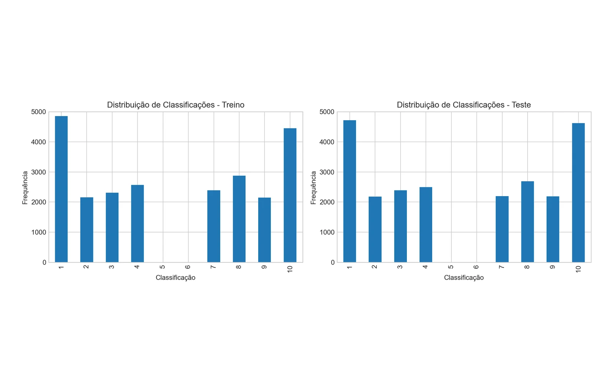
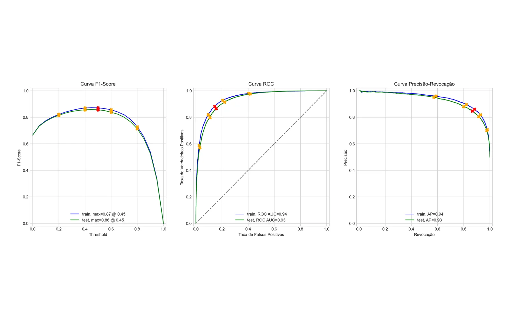
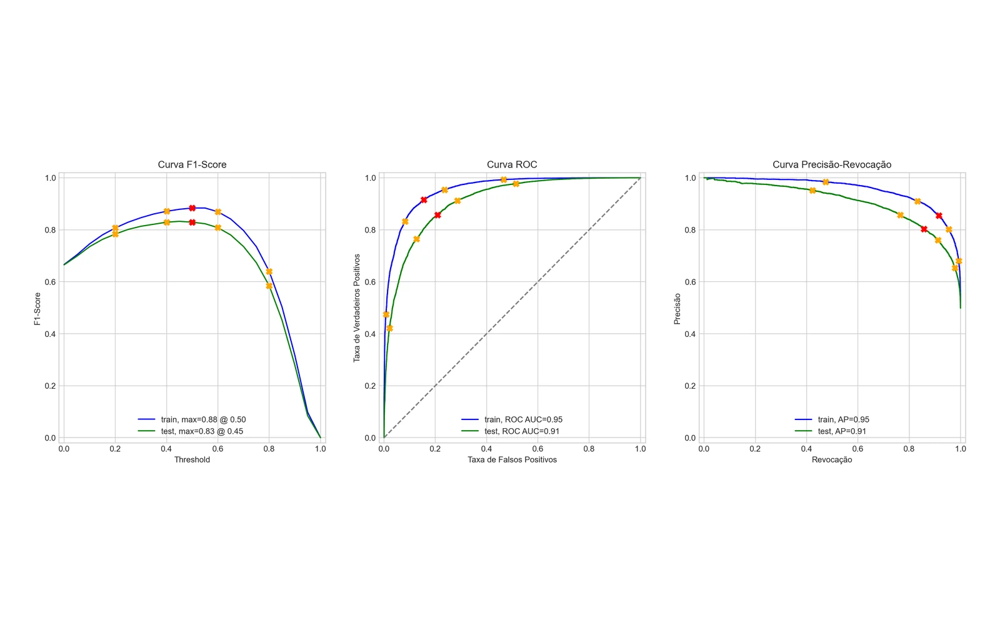
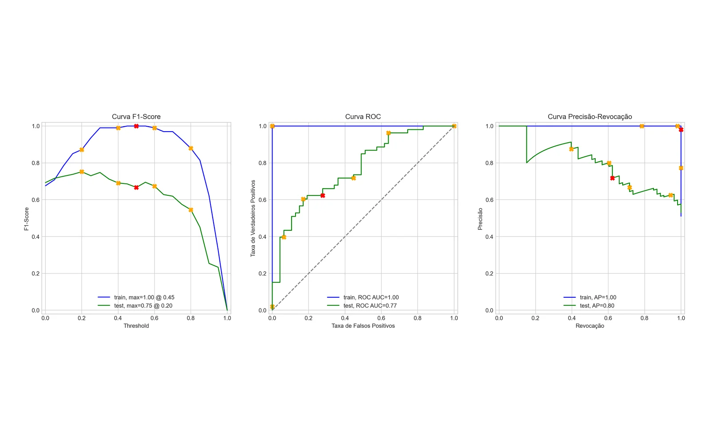

PortfólioModelos preditivos e estatística
Classificação de resenhas de filmes
Classificador que identifica se uma resenha de filme é positiva ou negativa. Foram comparadas quatro formas de transformar o texto em números. A meta era F1 de 0,85. A combinação de spaCy, TF-IDF e Regressão Logística chegou a 0,86 em 23.483 resenhas de teste.
- Contexto
- Bootcamp de Ciência de Dados, TripleTen
- Problema
- Classificação binária de texto em inglês
- Dados
- Resenhas do IMDb rotuladas por polaridade (Maas et al., 2011)
- Métrica
- F1, meta de 0,85
Objetivo
Separar resenhas de filmes em positivas e negativas sem leitura manual.
Critério de aceite: F1 de pelo menos 0,85 no conjunto de teste.
Dados
- OrigemBase pública de resenhas do IMDb, com 17 colunas: texto, nota de 1 a 10, polaridade e dados do filme.
- Tamanho47.331 resenhas. Ficam 47.242 depois de remover duplicadas.
- Classes23.680 negativas e 23.562 positivas: classes equilibradas.
- DivisãoA própria base separa treino e teste: 23.759 e 23.483 resenhas. As notas 5 e 6 não aparecem.
Organização
Caminhos testados
Modelos e métricas
F1 no teste
Meta: 0,85. BERT avaliado em 100 resenhas por causa do custo de processamento em CPU.
AUC-ROC no teste
No treino: 0,94; 0,94; 0,95 e 1,00. O BERT decorou as 100 resenhas de treino.
Achados
F1 do melhor modelo: spaCy, TF-IDF e Regressão Logística. Passou a meta de 0,85.
de F1 do spaCy sobre o NLTK, com o mesmo vetor e o mesmo classificador.
de F1 do LightGBM em relação à Regressão Logística (0,82 contra 0,86), com o mesmo texto.
AUC-ROC do BERT do treino para o teste: sobreajuste numa amostra de 100 resenhas.
Limites
- Vocabulário curtoO TF-IDF usou só os 1.000 termos mais frequentes.
- BERT incompletoO BERT rodou em CPU com 100 resenhas de treino e 100 de teste. O resultado não se compara aos outros.
- Ironia e negaçãoA limpeza remove palavras vazias como "not". Frases como "I just didn't like it" perdem a negação.
- IdiomaO modelo foi treinado em inglês. Não se aplica a resenhas em português sem novo treino.
Gráficos do notebook
Imagens geradas pelo notebook do projeto.







